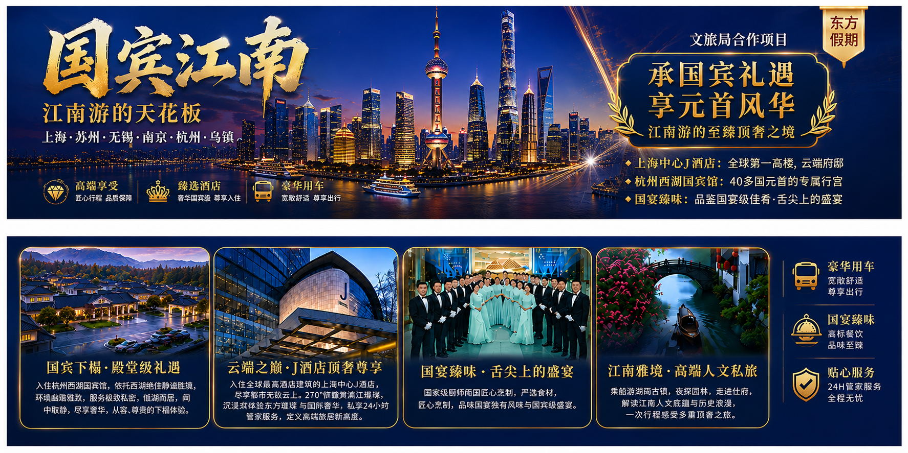
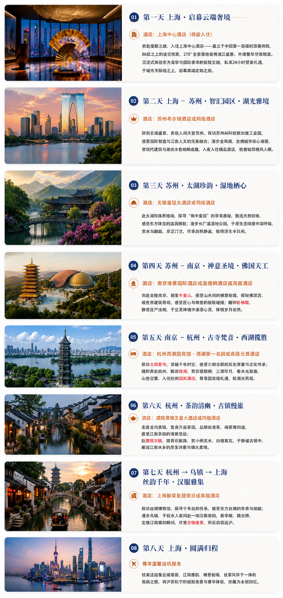

← 返回全部精选体验
01 · Jiangnan Signature Journey
—
国宾江南8天
Jiangnan Grand Hospitality Journey
从上海的城市天际线走入江南园林、国宾礼遇与水乡雅境，在八天里感受文化、饮食与从容生活。
Journey Highlights
🌸 行程亮点 🤩
-
📷1
独家汉服旅拍礼遇
独家赠送中华传统汉服旅拍全套，摄影师跟拍、乌镇全程欢乐微电影、10寸团体照及手机版个人照。
-
🛶2
独家船游西湖
感受“西湖雅韵，诗词里的江南”。
-
🏨3
帝皇式礼遇，元首级酒店
入住世界著名酒店：上海中心J酒店一晚，全球第一高楼，86层高，凌空而居；杭州西湖国宾馆一晚，40多国元首的专属行宫，享36万平方私家园林；另享5晚希尔顿、皇冠大酒店或同级五星豪华酒店，观外滩美景、赏西湖风光、享私家园林。
-
🍨4
升级特色膳食，品鉴国宴级佳肴
江南御宴，国宾礼遇；浙北、太湖、金陵、古镇与水乡风味均有品尝，包括张功馆、无锡喜福楼、南京大排档及网红苏式面。
-
🚗5
精品华人华侨小团
全程乘坐2+1头等舱保姆车，座椅可调节至近180°平躺，拥有远超普通巴士的腿部空间与舒适度，让长途旅行变为一种享受。
Daily Itinerary
行程细节
从第一天启幕云端奢境，到第八天圆满归程，逐日查看国宾江南行程安排。
